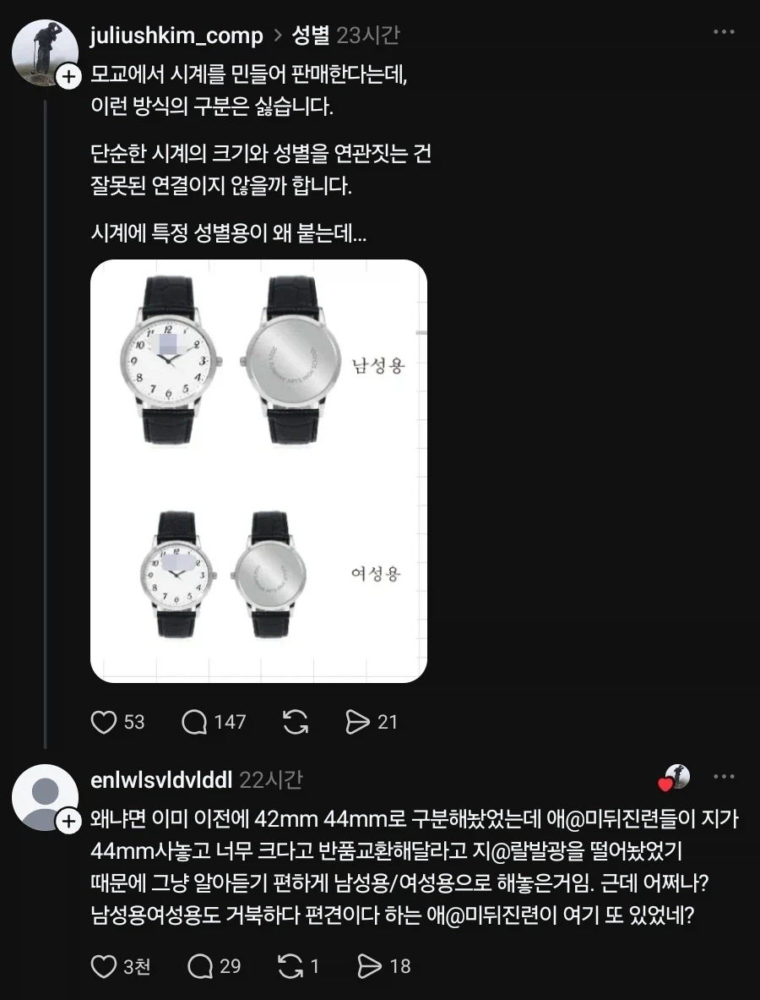

손목시계가 남성용, 여성용으로 구분되는 이유
댓글
여성인데 남성용 사이즈가 필요한 분이신가부다 ㅠ
천재
쿰척쿰척
역시 모든데다 욕박는 그 부류.
왜 그렇게 됐는지 궁금하면 좀 찾아봐라 미친년들아 '나만불편해' 거리지말고 씨발
40, 42미리가 좋아 44미리 방간 너무 싫어
방간이 지름이나 외경을 뜻하는 한자어였나 싶어 찾아봤더니 방패간지네ㅋㅋ
하나 배웠다잉
혹시 방원이니?
남자는 44mm죠
속이 뻥
어 음..... 그래 불편하신분들 손목이면 여성용보단 남성용 사이즈가 맞을거같긴 해
헤이헤이헤이
큰시계 방간 개싫은데 작은시계차면 손목두꺼워서 안잠길정도라 족같음...
손목두꺼워서 안잠길정도면 큰시계 차도 방간 안뜨잖아
저건 44 42표기가 맞고 반품 환불 관련 가이드 라인 만드는게 맞음
남성용 여성용이 더 병신같음 기준도 없고
44가 크긴 해 일상에서 좀 불편함
여자들이 42 44라고 써놨는데 사는 경우가 있어?
남자도 방간이라고 사이즈 꼭 확인하고 사는데.. ㅋㅋㅋ
? 롤렉스 서브마리너가 41mm인데.. 여성용이 42mm??? 존나크게만들었네ㅋㅋㅋㅋ
요새 점점 커짐. 애플워치도 38/42에서 42/46까지 커짐
여자용으러 42도 큰거 같은데 ㅋㅋ
38이 이뻐
한녀 수준 ㅋㅋㅋㅋㅋㅋㅋㅋㅋㅋㅋㅋㅋ 저딴거 낳고 참 20년을 넘게 살면 ㅋㅋㅋㅋㅋ
ㅋㅋㅋ 그와중에 좋아요 눌러줬네
근데, 난 크기로 구분하는게 맞다고 생각한다. 가끔 손목 작은 남자도 42mm 쓸때도 있어서 ㅇㅇ
???: 여기..! 남성용 돈까스 하나!!
처먹는건 남성용으로 처먹으면서 시계갖고 지랄이노
애미뒤짐 보존의 법칙
44 42 로하고 큰거 시켰을때 반품은 불가 처리 해야지
속이 뻥
그래도 크기로 안내해야지; 옷보고 L 사이즈면 남성이고 S사이즈 여성용 일케 해놓으면 말이 됨?
손목 둘레별 추천 시계
지름15cm 이하 (매우 얇은 손목): 34mm ~ 36mm [1]
16cm ~ 17cm (보통 손목): 38mm ~ 40mm (가장 표준적인 크기) [1]
17.5cm ~ 18.5cm (두꺼운 손목): 41mm ~ 44mm [1]
19cm 이상 (매우 두꺼운 손목): 44mm 이상 대형 시계 [1]
둘레 얘기 같은데 둘레보다는 단면 넓이 보는 게 더 중요한 듯
난민손목이라 36이 좋아
생물학적 성, 사회적 성, 정신적 성, 안드로진 어쩌고도 있는데 손목시계적 성도 있나보다해라
"난 손목시계적 남성이니까 남성용 차야지" 하고 받아들여
36이상이면 남성 미만이면 여성용이라고 봄
그렇다고 xl 같은걸로 구별하면 지ㅈ대로 s 구매한 다음에 작다고 화낼거잖아요
42mm 쓰는데 언제 여성 되나요?
게이용은 왜 없나요?
여자는 28아닌가 남자는 38이 젤이쁨
애초에 여성들이 차는 시계는 진짜 저게 시간이 보이긴 하나 싶을 정도로 작은 것도 많던데;;
제목보고 ㅈㄴ 당연히 손목 굵기때문아닌가?
하고 들어온 내가 하수였네...
손목이 굵었으면 좋겠어 흑흑
??? : 남성용과 여성용의 가격차이는 성차별이다